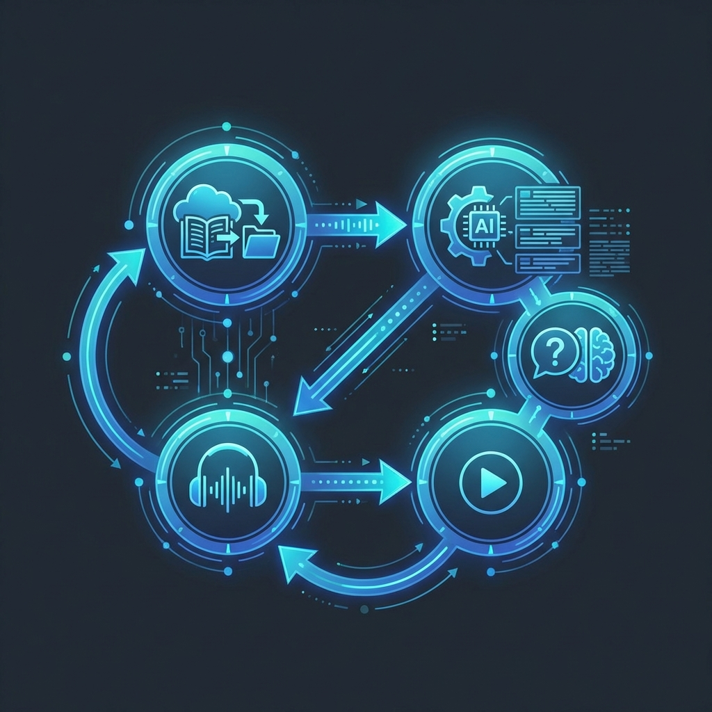

📚 Proč NotebookLM pro studium?

NotebookLM se studentům vyplatí hlavně jako studijní asistent nad vlastními materiály: umí z nahraných zdrojů dělat přehledy, otázky, audio shrnutí a pomáhá tak šetřit čas i prohlubovat porozumění.
Na rozdíl od běžných chatbotů, které „vědí všechno z internetu", NotebookLM pracuje výhradně s vašimi materiály – což znamená relevantní a přesné odpovědi přesně na to, co se učíte.
🎯 Základní principy práce
✅ Tři zlatá pravidla
- Vždy nahrávat vlastní zdroje (skripta, prezentace, články, zápisky) – nečekejte, že NotebookLM „ví všechno z webu"
- Mít pro každý předmět/téma samostatný sešit – ne jeden velký „chaos sešit"
- Ptát se konkrétně: „Vysvětli mi krok za krokem…", „Porovnej tyto dva pojmy…", „Vytvoř otázky na opakování z kapitoly 3."
💡 Doporučení pro efektivní studium
- Začněte nahráním materiálů – poslední seminárky, zápisky a prezentace. Zkuste si nechat udělat souhrn, otázky a vysvětlení nejasných částí.
- Využívejte různé formáty výstupů:
- Přehled
- FAQ
- Studijní průvodce
- Časová osa
- Audio přehled
- Při přípravě na zkoušku si nechte vygenerovat studijní příručku a sadu otázek/kvízů – ty potom ručně projděte a doplňte vlastní poznámky.
🎓 Typické use-casy pro studenty
📖 Pochopení náročného učiva
Nahrajte kapitolu učebnice / skripta a nechte si vysvětlit pojmy „jako pro deváťáka". Požádejte o příklady, analogie a kontrolní otázky.
📝 Příprava na test/zkoušku
Z materiálů vygenerujte studijní průvodce, seznam klíčových pojmů, krátké otázky a odpovědi, případně flashcards (např. export do Quizletu).
📄 Seminárky a projekty
Sloučte články, výzkumy, poznámky a nechte si vygenerovat osnovu, seznam argumentů pro/proti, kontrolní seznam literatury – ale text pište a strukturujte už aktivně, ne ho jen kopírovat.
🚀 Pokročilejší scénáře
Práce s více zdroji najednou
V jednom sešitu můžete mít až desítky–stovky zdrojů (PDF, Docs, web) a pak zadávat otázky typu:
- „Najdi, kde si autoři odporují"
- „Sestav přehled různých teorií k tématu…"
Audio shrnutí a „podcast"
Nechte si látku převyprávět jako dialog dvou mluvčích a poslouchejte ji cestou do školy nebo při opakování. Ideální pro auditivní typ učení!
Skupinové projekty
Vytvořte sdílený sešit pro tým, kde všichni nahrávají zdroje a AI pak pomáhá se souhrny, rozdělením práce a návrhem struktury prezentace.
⚠️ Didaktická doporučení / bezpečné používání
🔍 Důležité zásady
- Brát NotebookLM jako nástroj na práci se zdroji, ne jako náhradu učení – student má vždy ověřovat, doplňovat a přepisovat vlastními slovy.
- Učit se kontrolovat citace a původ informací: ptejte se „Z jakého dokumentu tato informace pochází?" a porovnejte s originálem.
- V hodinách ho používat na činnosti vyššího řádu: porovnání názorů, tvorba otázek, hledání vztahů – ne jen „udělej mi referát".
🎯 Shrnutí
NotebookLM je výborný pomocník pro studium, ale vyžaduje aktivní přístup. Nejlepší výsledky dostanete, když:
- Nahrajete kvalitní vlastní materiály
- Ptáte se konkrétně a cíleně
- Výstupy AI vždy ověřujete a doplňujete
- Používáte různé formáty výstupů podle situace
Pamatujte: AI vám pomůže s organizací a porozuměním, ale skutečné učení se odehrává ve vaší hlavě!